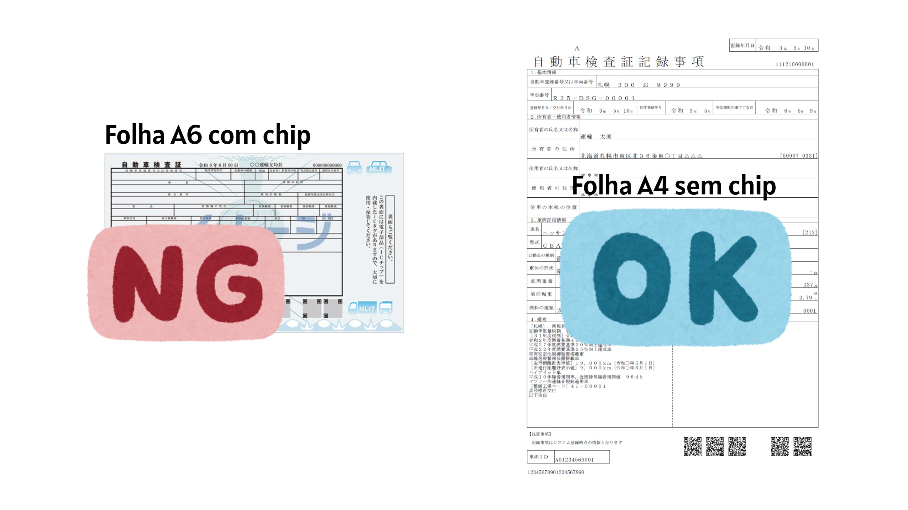

Cadastro veicular
Atualização do Cadastro Veicular
Manter os dados do veículo atualizados junto à empresa é obrigatório para todos os colaboradores que utilizam automóvel no trajeto de ida e volta ao trabalho.
A atualização correta é necessária para manter a regularidade do auxílio-transporte, a autorização de uso do estacionamento e as informações necessárias em caso de acidente ou outro imprevisto.
⚠️ Proibido o uso de motocicletas
Não é permitido utilizar motocicletas no trajeto até a empresa nem estacioná-las no estacionamento da empresa.
Essa proibição vale para motocicletas de qualquer cilindrada, incluindo scooters e ciclomotores (原付・原動機付自転車).
O cadastro veicular, o auxílio-transporte e a autorização de estacionamento são destinados exclusivamente a automóveis.
📅 Quando devo atualizar o cadastro?
Faça a atualização sempre que ocorrer uma destas situações:
- Troca de veículo, seja pela compra de um automóvel novo ou pelo uso de um carro diferente.
- Troca da placa, incluindo alteração do número ou do tipo de placa, como de amarela para branca.
- Renovação do 車検 — inspeção veicular obrigatória.
- Renovação do seguro voluntário do veículo.
📋 O que fazer antes de preencher
-
1
Atualize os dados no aplicativo TOKIWAGI
Se você trocou de veículo ou de placa, atualize primeiro os dados no aplicativo TOKIWAGI.
Se estiver apenas renovando o seguro ou o 車検 do mesmo veículo, não é necessário alterar os dados no aplicativo.
-
2
Solicite uma autorização temporária, se necessário
Caso esteja utilizando provisoriamente um carro reserva, um veículo fornecido pela oficina ou esteja aguardando a emissão do selo definitivo da empresa, solicite ao supervisor do seu setor uma Autorização Temporária de Estacionamento.
臨時駐車許可・りんじちゅうしゃきょか
-
3
Prepare o documento
Tenha em mãos o documento original e atualizado. Você deverá fotografá-lo ou digitalizá-lo em PDF para anexá-lo ao formulário.
📸 Documento obrigatório
Registro dos Dados da Inspeção Veicular 自動車検査証記録事項
Envie uma imagem da folha A4 branca, sem chip.
Não envie somente o certificado veicular pequeno, de tamanho A6, que possui chip.
- Mostre a folha inteira.
- Não dobre o documento.
- Verifique se todos os cantos estão visíveis.
- Não corte nenhum dado da inspeção.
- Certifique-se de que a imagem esteja nítida e legível.
